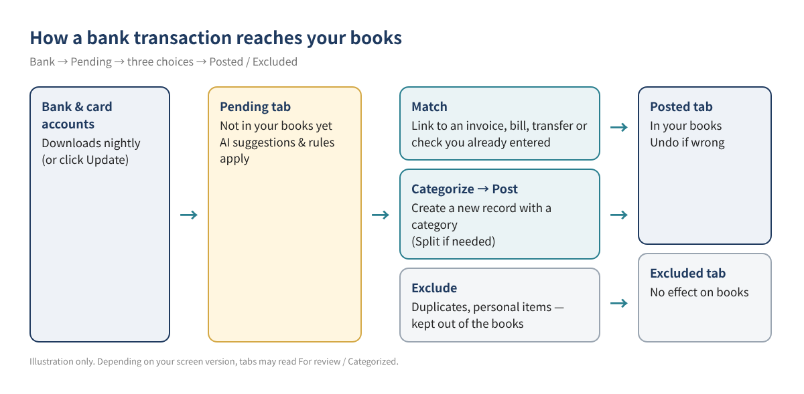
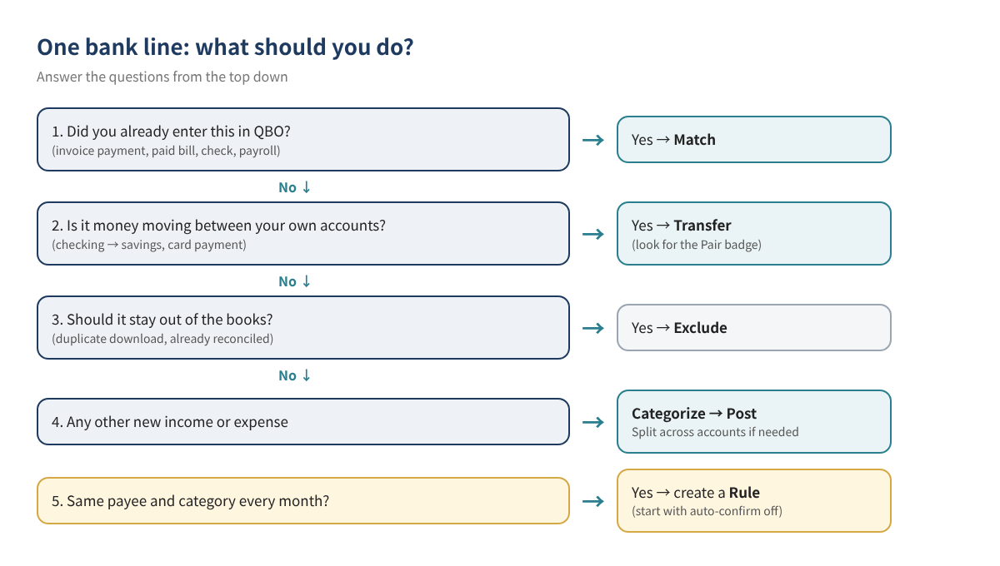
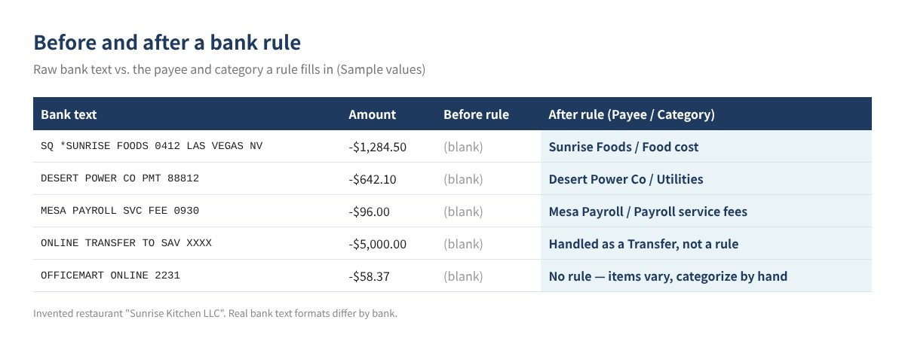
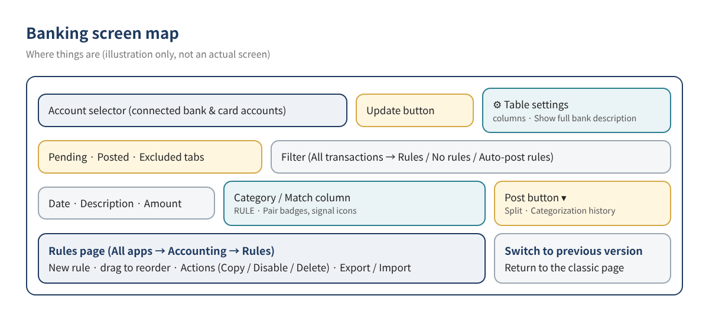

QuickBooks Online Bank Feeds Explained: How to Clear a Pile of Bank Transactions with Match, Add and Rules
Connecting your bank to QuickBooks Online (QBO) means transactions flow in every day. Leave them alone for a few weeks, though, and hundreds of unreviewed lines pile up. The usual shortcuts make things worse: dumping everything into "Ask My Accountant," or adding a customer payment as brand-new income when the invoice was already in QBO, which double-counts revenue.
This guide walks through connecting accounts, deciding whether each line should be matched to an existing record, categorized and posted as a new one, or excluded, and then using bank rules to categorize repeat transactions automatically. It expands the short bank-feed section of our series starter, QuickBooks Online Basics for Beginners, into full step-by-step instructions.
Who this is for ☐ You have dozens or hundreds of unreviewed bank transactions ☐ You are not sure when to Match and when to Add (Categorize) ☐ You categorize the same vendor by hand every month ☐ Your income or expenses look doubled since you connected the bank
1. Start with the big picture
Downloaded transactions land on the Pending tab first. While they sit there they have no effect on your books — your P&L and balance sheet ignore them. Only after you Match, Categorize and Post, or Exclude a line does it move to the Posted tab (in the books) or the Excluded tab (kept out).

Intuit recently introduced a new AI-powered banking page, so tab names may differ depending on which version you see. The same functions go by these names:
| New page | Name often seen on the classic page | Meaning |
|---|---|---|
| Pending | For review | Not yet handled; no effect on the books |
| Posted | Categorized | Handled and recorded in the books |
| Excluded | Excluded | Deliberately kept out of the books |
| Post button | Add / Confirm button | Confirms the selected category or match |
Tip Intuit's help says you can return to the classic page with Switch to previous version on the bank transactions page. Menus move often, so if you cannot find something, type "Bank transactions" or "Rules" into the search bar at the top.
2. Connect bank and credit card accounts, step by step
- Go to All apps → Accounting → Bank transactions in the left menu. (Some screens show Transactions → Bank transactions.)
- Select Connect account. If an account is already connected, select Link account.
- Search for your bank, sign in with your online banking credentials, and complete the bank's security steps. If your bank is not listed, use Request a provider.
- Choose the accounts to connect (checking, savings, cards) and pair each one with the matching account in your chart of accounts.
- Pick the download start date. According to Intuit, how far back you can go varies by bank, from 90 days up to 24 months.
- Select Connect, then Done.
Set the start date to the day after your opening balance date. Downloading a period you already entered by hand creates duplicates. See Starting QuickBooks Online Right: Opening Balances and Your Chart of Accounts for how to set opening balances.
When do transactions arrive?
- Most accounts download automatically every night. Per Intuit, automatic updates usually begin around 10 PM Pacific, and there is no setting to turn them on or off.
- To pull transactions right away, select Update on the bank transactions page and complete any extra verification.
- QBO does not download transactions that are still pending at the bank, so a card swipe from this morning may not show yet.
- Intuit notes that some card accounts download only two or three times a week.
3. Match, Categorize, Exclude or Transfer: which one?
The key question for every line is: is this already recorded in QBO? If yes, link it with Match instead of creating a new record. If not, Categorize it to create one.

| Action | When to use it | Result in the books | Example (Sample values) |
|---|---|---|---|
| Match | An invoice payment, paid bill, check, paycheck or transfer already exists in QBO | Links to the existing record; invoices and bills are marked paid | Customer A pays invoice #1042, $2,400 |
| Categorize → Post | New income or expense not yet in QBO | Creates a new transaction in the chosen category | Food supplies $1,284.50 → Food cost |
| Transfer | Money moving between your own business accounts, or paying the business card | Recorded as a movement between accounts, not income or expense | Checking → savings $5,000 |
| Exclude | Duplicate downloads, or lines already covered by a reconciled record | No effect on the books (kept on the Excluded tab) | Same amount downloaded twice on one day |
When QBO suggests a match
Intuit's help says QBO suggests records with the same amount dated from 90 days before to 20 days after the bank transaction. On the new AI page, suggestions also weigh payee, date closeness and how often you accepted similar matches, and QBO can find partial and combined matches.
- If the suggestion is right, review it and select Post.
- If it is wrong, use Find other match (or Find match when no suggestion appears) to locate the right record.
- Common reasons no match appears: card fees or discounts changed the amount, several payments were deposited together, the record falls outside the date window, or the record is already reconciled. Grouped deposits are covered in How to Clean Up Undeposited Funds.
- A "Potential match" warning means you usually match this kind of line. It is guidance, not a lock — enter the invoice or bill first, then match.
Categorizing new transactions and splitting
- On the Pending tab, select the line. If the action shows Match, switch it to Categorize.
- Choose the payee and category. If AI pre-filled a category, check that it is right.
- If one transaction covers several accounts (say, a warehouse-store receipt with food and cleaning supplies), choose Split from the menu next to Post and enter an amount per category until Difference is $0.
- Select Post. The line moves to Posted and hits your books.
The new page adds review signals: a green check means a clear pattern in your history, a blue info icon means some variation worth confirming, and an orange alert means limited data. Likely transfers and card payments get a Pair badge — posting one side posts the other. Intuit says Essentials and higher plans also get a Ready to post banner that groups high-confidence lines for review in one step. Either way, suggestions are suggestions: you are responsible for checking the category before you post.
4. Automate repeat transactions with bank rules
Vendors that hit the same category every month — your food supplier, the power company, payroll service fees — are ideal for rules, which fill in the details for you.

How to create a rule
- Go to All apps → Accounting → Rules and select New rule.
- Name the rule (for example, "Food cost - Sunrise Foods").
- Choose Money in or Money out and the account it applies to, or All bank accounts.
- Set conditions: pick Description, Bank text or Amount, and an operator — Contains, Doesn't contain or Is exactly. Use + Add a condition for up to five conditions per rule.
- Choose what to assign: transaction type, payee, category, tags and, depending on your company settings, fields like customer or project.
- Select Save. Matching lines on the Pending tab now show a RULE badge.
| Setting | Example entry (Sample values) | Note |
|---|---|---|
| Rule name | Food cost - Sunrise Foods | "Category - Vendor" makes rules easy to find |
| Applies to | Money out / Business Checking | Use All bank accounts if the card is used too |
| Condition 1 | Bank text · Contains · SUNRISE FOODS | Leave out store numbers and dates that change |
| Condition 2 (optional) | Amount condition | Only when the amount stays in a narrow range |
| Assign | Payee: Sunrise Foods / Category: Food cost | Category must exist in your chart of accounts |
| Auto-confirm | Off for the first month or two | Turn on only after results prove stable |
Bank text is the raw string your bank sends; Description is QBO's cleaned-up version. To see the raw text, open the settings ⚙ on the bank transactions page and turn on Show full bank description. The same vendor often carries a changing store number or date, so a Contains condition on the stable keyword works best.
Be careful with auto-confirm
Turning on Automatically confirm transactions this rule applies to posts matching lines straight from Pending into your books with no human review; these rules show an AUTO badge. Per Intuit, auto-post rules run when you sign in, upload a file, or create or modify an auto-post rule. It saves time, but a broad condition can push the wrong transactions into the books, so start with it off and switch it on only after watching the results.
Rule order and housekeeping
- When several rules fit a transaction, the highest-priority rule (top of the list) applies first. Drag rules to reorder: specific rules on top, broad rules lower.
- Use the Actions menu on the Rules page to Copy, Disable or Delete a rule.
- Use Export rules (saved as an Excel file) and Import rules from the menu next to New rule to reuse rules in another company file — handy if each store has its own file.
- Intuit says you can create up to 2,000 bank rules.
- Filter the bank transactions list (All transactions → Rules, No rules, Auto-post rules) to audit what your rules are doing.
- On the new AI page, a rule always takes priority over the AI category suggestion.
Transactions that should not get a rule Online marketplaces and warehouse stores where the category changes with every purchase, anything that may include personal spending, and transfers between accounts. Review those by hand; handle transfers with Transfer or the Pair badge.
5. Banking screen map

In the QBO mobile app, Intuit says you can review match suggestions under Menu → Accounting → Bank transactions and tap See why to see the reason behind a suggestion. Clearing a few lines on the go keeps month-end light.
6. Worked example: one month at a Las Vegas restaurant
Imagine "Sunrise Kitchen LLC," an invented restaurant in Las Vegas, Nevada, that downloads 142 checking transactions and 61 card transactions for October. It has POS deposits and delivery-app payouts, food suppliers, and an outside payroll service. (All figures are Sample values.)
| Transaction type | Count | Action | Key point |
|---|---|---|---|
| Catering invoice payments | 6 | Match | Invoices were entered first, so Match marks them paid |
| Daily card-sales deposits | 31 | Categorize + Rule | "POS DEPOSIT" → sales account; repeats daily, good rule candidate |
| Food supplier payments | 18 | Match or Rule | Match vendors entered as bills; rule for vendors paid by card without bills |
| Payroll service withdrawals | 4 | Match or Categorize | Depends on how payroll is recorded (see link below) |
| Power, gas, internet | 3 | Rule | Same payee and category every month |
| Checking → savings, card payment | 3 | Transfer | Look for the Pair badge; not an expense |
| Warehouse store / online purchases | 22 | Categorize (Split if needed) | Category varies; review by hand |
| Same-amount duplicate downloads | 2 | Exclude | Confirm on the bank statement first |
In month one, the owner creates about six rules with auto-confirm off. In month two, lines with a RULE badge just need a quick look and Post, which cuts review time sharply. Only rules that never misfired over two months (like the power company) get auto-confirm. A bank reconciliation against the statement closes out the month. For payroll withdrawals from an outside service, see Recording Outside Payroll in QuickBooks with a Payroll Clearing Account.
7. Common mistakes
- Adding an invoice payment as new income: revenue doubles and the invoice stays open. Always look for a match on deposits first.
- Categorizing transfers or card payments as expenses: expenses are inflated. Use Transfer.
- A start date that overlaps hand-entered data: duplicates appear. If you already have them, see How to Find Duplicate Transactions and Reconciliation Differences.
- Broad auto-confirm rules: a condition like "Contains: PAYMENT" catches unrelated lines and posts them unseen.
- Undoing or deleting reconciled transactions: last month's closing balance breaks. Exclude downloads that duplicate reconciled records instead.
- Parking everything in Uncategorized or Ask My Accountant: year-end cleanup gets much harder. Leave unknown lines in Pending until you check the receipt. For many misclassified lines, see How to Bulk Reclassify Transactions.
8. FAQ
Q1. Do Pending transactions show on my P&L?
No. They do not affect the books until you Post or Match them, so a large Pending backlog can make reports look understated.
Q2. How do I undo a transaction I posted by mistake?
Find it on the Posted tab for that account and select Undo; it returns to Pending for correction. Intuit recommends fixing matches before each monthly reconciliation. If the line is already reconciled, check the effect on the prior close before undoing it.
Q3. Will a new rule change transactions I already posted?
Intuit's help describes rules as applying to transactions on the Pending (For review) tab. It does not say they rewrite posted history, so fix past transactions separately.
Q4. What if my bank is not on the list?
Use Request a provider on the connection screen. For banks that cannot connect, Intuit's help describes downloading a transaction file from the bank's website and uploading it manually; check the current help article for supported file types and steps.
Q5. Can I post AI-suggested categories as is?
Even green-signal lines are posted by you. A new company has little history, so suggestions can be off — check large amounts and new vendors. If suggestions get in the way, Intuit says you can turn off Enable suggested categorization in the settings ⚙.
9. Self-check
- ☐ All bank and card accounts are connected, and the start date does not overlap the opening balance date
- ☐ For every deposit, I look for a match (invoice or payment) first
- ☐ Transfers and card payments are recorded as transfers
- ☐ Repeat vendors have rules keyed on stable keywords
- ☐ Auto-confirm is on only for rules I have watched for a month or two
- ☐ I clear the Pending tab at least once a week
- ☐ I reconcile to the bank statement at month-end
Related posts
- QuickBooks Online Basics for Beginners: 10 Things to Know
- Starting QuickBooks Online Right: Opening Balances and Your Chart of Accounts
- QuickBooks Online Chart of Accounts Examples by Industry
- How to Import Customers, Vendors and Products into QuickBooks Online
- Set Up Users, Roles, Accountant Access and 2-Step Verification in QBO
- How to Clean Up Undeposited Funds
- How to Find Duplicate Transactions and Reconciliation Differences
This article is general educational information, not tax, legal or financial advice. Confirm decisions about your own situation with a qualified professional. QBO screens, menu names, features and plan pricing change often; check your current screens and Intuit's official help before you act. All company names and figures in this post are invented examples.
QuickBooks is a registered trademark of Intuit Inc.; not affiliated with or endorsed by Intuit.
Sources
- Connect bank and credit card accounts to QuickBooks Online (Intuit, US)
- Download the most recent bank and credit card transactions in QuickBooks (Intuit, US)
- Categorize online bank transactions in QuickBooks Online (Intuit, US)
- Match your bank and credit card transactions (Intuit, US)
- Learn about updates to the new AI-powered banking page (Intuit, US)
- How AI suggestions help match and categorize bank transactions (Intuit, US)
- Set up bank rules to categorize online banking transactions in QuickBooks Online (Intuit, US)
- Match your bank transactions — QuickBooks Online mobile app (Intuit, US)